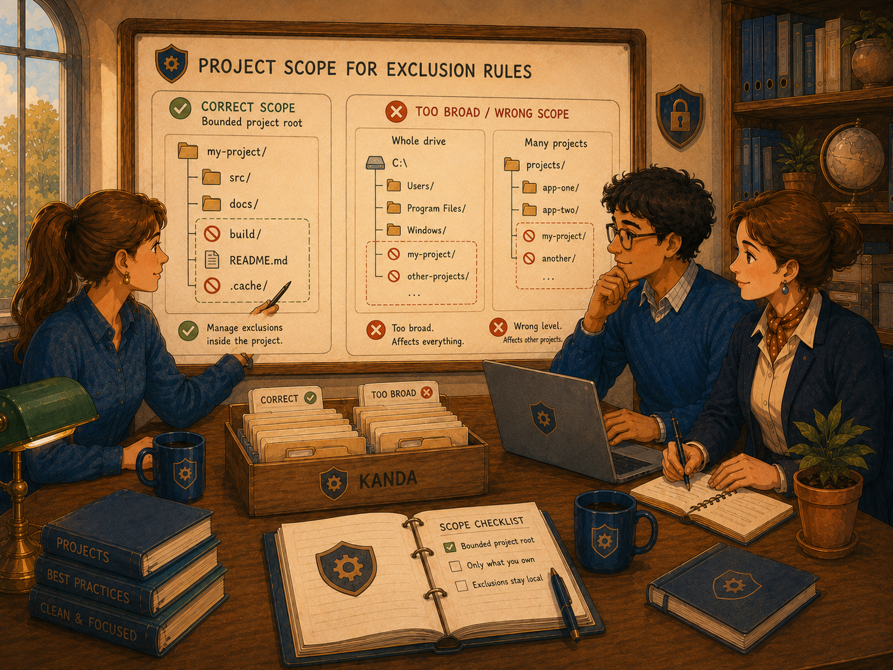
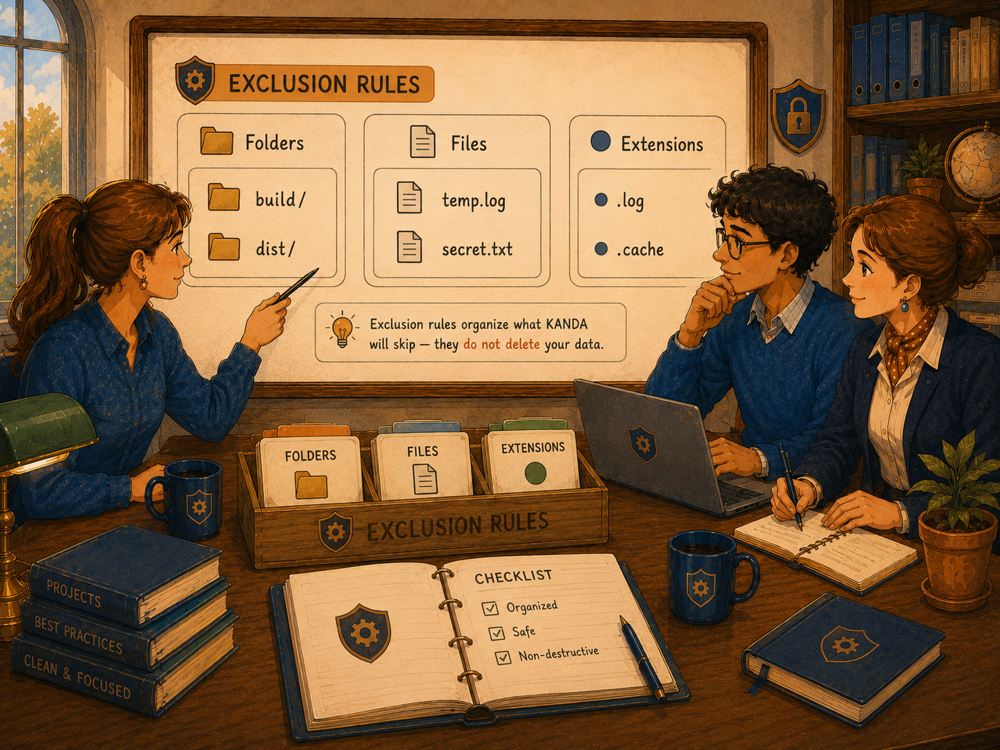

KANDA Reasoner Help
First-Time User TutorialExclusion Rules
Choose what KANDA treats as outside the active project during collection, validation, mapping, and other workflows—without deleting the excluded files.
What Exclusion Rules Means
An exclusion rule tells KANDA to ignore a named folder, file, file pattern, or extension when a supported workflow examines the project.
In plain English: The item may exist on the computer, but KANDA should not treat it as part of the active project being analyzed.
Excluded items remain on disk. This tab does not move, rename, edit, or delete them.
Why Exclusion Rules Matters
Exclusions reduce generated output, duplicate copies, backups, caches, logs, dependency folders, and archived material in project analysis.
Careful rules can make collection faster, reports cleaner, exports smaller, maps more accurate, and AI context more relevant.
What This Tab Does
- Choose the project root.
- Show project-specific or fallback scope.
- Manage folder rules.
- Manage file rules.
- Manage extension rules.
- Add, edit, remove, or clear entries.
- Save manually when desired.
- Reset the active scope to defaults.
- Keep separate rules for separate roots.
Every list change is auto-saved. The Save Rules button is optional.
Important Safety Boundary
Exclusion Rules changes project analysis scope, not the file system.
The Safest First-Time Workflow
Step 1 - Select Project Root
Use Select Active Project to choose the actual project root. The path field is a read-only projection of shell-owned Project authority.
Step 2 - Read the Scope message
Confirm fallback-only versus project-specific rules and whether Reasoner defaults are active.
Step 3 - Review defaults
Do not begin by clearing all lists.
Step 4 - Add one rule
Add one clearly unnecessary folder, file, or extension.
Step 5 - Confirm auto-save
Adding, editing, removing, clearing, and resetting save immediately.
Step 6 - Rerun a workflow
Confirm that only the intended material is removed from analysis.
Project Root

The Active Project path identifies the active rule set. Select Active Project opens the shell-owned folder chooser, and Eject Active Project clears Project authority intentionally.
Avoid an entire drive, a user-profile folder, or a parent folder containing several projects.
Project-Specific and Fallback Rules
Each selected project root owns an independent rule set.
With no project root selected, the tab uses fallback rules only.
When the selected root is recognized as KANDA Reasoner, additional Reasoner-specific defaults become active.
The Three Rule Categories

Folders
Exact folder names and supported patterns such as build, dist, archive, or *backup*.
Files
Exact file names or patterns such as debug.log, *.log, or *.tmp.
Extensions
File suffixes such as .pyc, .bak, or .swp.
Built-In Defaults
Defaults include common caches, virtual environments, build output, dependency folders, project-reference folders, log patterns, temporary patterns, and generated-file extensions.
Saved rules are merged with current defaults. Empty values and case-insensitive duplicates are removed.
Folder Controls
Add Folder (browse) stores the selected folder's name, not its absolute path.
Edit Folder changes the selected rule and blocks duplicates.
Remove Folder removes the selected entry.
Clear All Folders asks for confirmation before clearing the list.
File Controls
Add File (browse) stores the selected file's name.
Edit File accepts a file name or pattern.
Remove File removes the selected rule.
Clear All Files asks for confirmation.
Extension Controls
Add Extension (text) accepts an extension such as .pyc.
Edit Extension changes the selected suffix.
Remove Extension removes the selected suffix.
Clear All Extensions asks for confirmation.
Duplicate Protection
Exact duplicates are blocked within each category. Edit the existing rule rather than adding the same text again.
Auto-Save, Save Rules, and Reset
Auto-save runs after adding, editing, removing, clearing, or resetting.
Save Rules (auto-save is on - optional) deliberately re-saves the visible lists.
Reset to Defaults (auto-saved) replaces the active visible lists with built-in defaults.
How Exclusions Are Used
The shared exclusion policy is used by project collection, source-tree export, project JSON filtering, context bundles, reconstruction payloads, bundle checking, architecture validation, docstring discovery, and other adopting workflows.
Exclusion Does Not Mean Deletion
Excluded items remain in their original location and can be restored to analysis by removing the matching rule.
What Success Looks Like
- Exact project root selected.
- Project-specific scope visible.
- Common defaults preserved.
- Generated material excluded.
- Active source remains included.
- Collection becomes cleaner.
- Other projects remain unaffected.
- Excluded files still exist on disk.
Common Mistakes
- Selecting the wrong project root
- Editing fallback rules instead of project rules
- Excluding an active source folder
- Using an absolute path where a folder name is expected
- Forgetting the leading period in an extension
- Using broad wildcard rules
- Assuming exclusion encrypts or deletes a file
If Something Goes Wrong
Check the project root, scope message, category, spelling, extension format, wildcard, workflow support, and whether the workflow was rerun.
Remove or edit a rule when important content disappears. Built-in defaults may return after reload because defaults are merged into saved rules.
First-Time Checklist
- Correct project root selected
- Scope message read
- Defaults reviewed
- Rule placed in the correct category
- Pattern is not too broad
- Auto-save completed without error
- Project workflow rerun
- Important items remain visible
- Excluded item remains on disk
- Other projects remain unaffected
Final Rule
Select the exact project root, keep active source in scope, exclude only clearly unwanted material, and verify the result after every meaningful rule change.